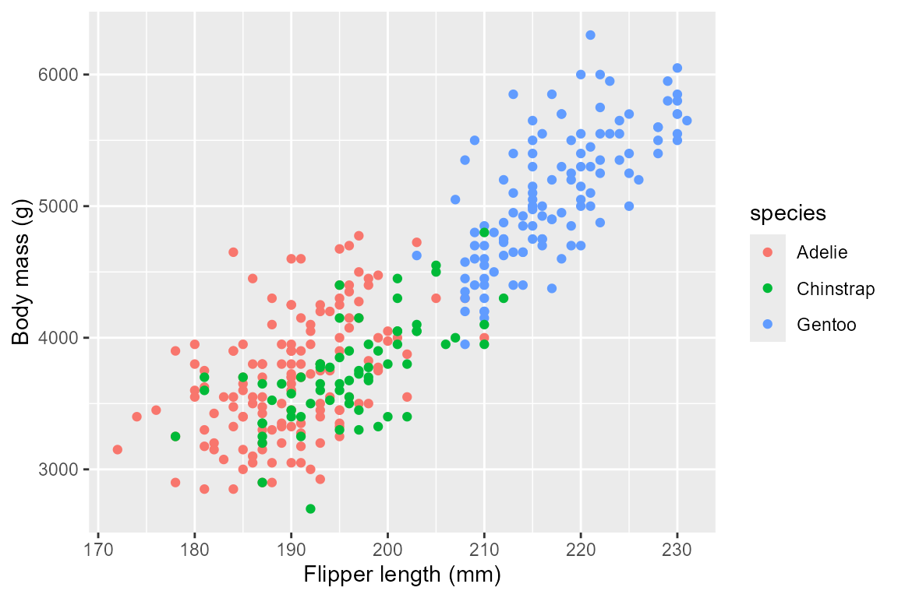
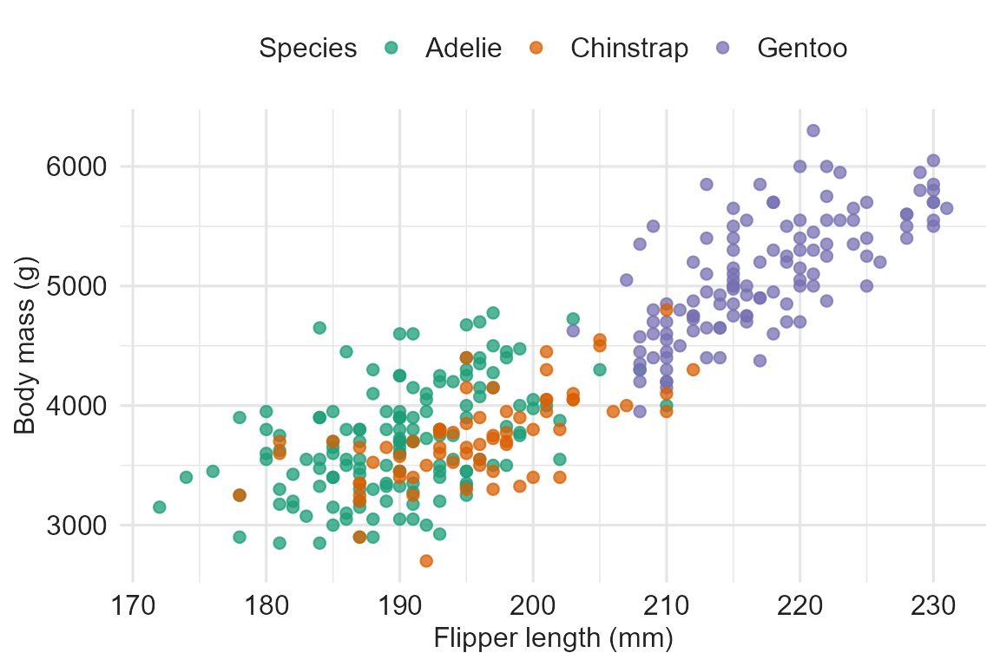

library(a11yviz)
library(ggplot2)
library(palmerpenguins)
#>
#> Attaching package: 'palmerpenguins'
#> The following objects are masked from 'package:datasets':
#>
#> penguins, penguins_raw
penguins <- na.omit(penguins)
dt_show <- function(df) DT::datatable(df,
extensions = "Buttons",
options = list(dom = "Bfrtip",
buttons = c("copy", "csv", "excel", "pdf"),
pageLength = 10,
scrollX = TRUE,
autoWidth = TRUE),
class = "compact stripe hover",
rownames = FALSE,
width = "100%")Example
p <- ggplot(penguins, aes(flipper_length_mm, body_mass_g, color = species)) +
geom_point() +
labs(x = "Flipper length (mm)", y = "Body mass (g)")
p
Audit reveals the gaps
a11y_audit() returns one row per WCAG criterion with a
status column. The table below filters to actionable
rows (status = "todo" or "ok") — the items
where the chart needs human attention.
| status | meaning |
|---|---|
ok |
check passes automatically |
todo |
needs user action |
applied |
handled by theme_a11y() / scale_*_a11y() /
a11y_layout()
|
manual |
requires human review (e.g., reflow at 320 px) |
css |
covered by a11y_css() stylesheet |
doc |
document-level check; run a11y_check_headings()
separately |
n/a |
not applicable to this chart type (e.g., hover on ggplot) |
audit_p <- a11y_audit_chart(p)
cat(a11y_audit_summary(audit_p))
#> 2 to do, 0 ok, 4 already handled.
dt_show(a11y_audit_actionable(audit_p))Two actionable items come back as todo:
- WCAG 1.1.1: alt text missing
- WCAG 1.4.1: redundant group encoding (color only)
Improved
p_a11y <- ggplot(penguins, aes(flipper_length_mm, body_mass_g, color = species)) +
geom_point(size = 2, alpha = 0.75) +
theme_a11y() +
scale_color_a11y("dark2_8") +
labs(x = "Flipper length (mm)", y = "Body mass (g)", color = "Species") +
theme(legend.position = "top")
p_a11y <- a11y_alt_text(p_a11y,
"Scatter of penguin body mass vs flipper length by species; Gentoo cluster at long flippers and high body mass.")
p_a11y
Three accessibility wins from a few extra lines:
scale_color_a11y("dark2_8") swaps in WCAG-tagged colors
that clear 3:1 on white (Success Criterion 1.4.11),
theme_a11y() applies the recommended font sizes and axis
styling (Success Criterion 1.4.4), and a11y_alt_text()
attaches the screen-reader description (Success Criterion 1.1.1). Color
is still the only group cue, so the audit honestly flags 1.4.1 as
todo — when shape variety would hurt readability, add
direct cluster labels or facet by species to clear it.
Audit again
audit_a <- a11y_audit_chart(p_a11y)
cat(a11y_audit_summary(audit_a))
#> 1 to do, 1 ok, 4 already handled.
dt_show(a11y_audit_actionable(audit_a))Alt text and text-size checks come back as ok; 1.4.1
stays todo by design (see the note above).
WCAG rubric
a11y_rubric() is the per-criterion reference: name,
level, threshold, and the a11yviz function that addresses
each. Same criterion column as a11y_audit(),
so the two join cleanly.
dt_show(a11y_rubric())Accessible CSS
a11y_css() returns the path to a stylesheet that handles
dark-mode tooltips, keyboard focus rings, table styling, and responsive
layout. a11y_css("shiny") also returns the path to the
Shiny add-on with skip-link, reduced-motion, and high-contrast
rules.
Playground
run_app() launches a local Shiny playground (mirrors the
Python a11yviz.run_app()). Two tabs compare a baseline
ggplot chart against the a11y-improved version with paired audit tables;
toggle between WCAG AA and AAA in the sidebar. Requires
shiny, bslib, and DT.
run_app()See the function reference for the full API.
References
- Crameri, F., Shephard, G. E., & Heron, P. J. (2020). The misuse of colour in science communication. Nature Communications, 11, 5444.
- Nuñez, J. R., Anderton, C. R., & Renslow, R. S. (2018). Optimizing colormaps with consideration for color vision deficiency to enable accurate interpretation of scientific data. PLoS ONE, 13(7), e0199239.
-
WCAG 2.1 specification —
pass any
criterionvalue toa11y_wcag_url()for the deep link. - ADA web guidance